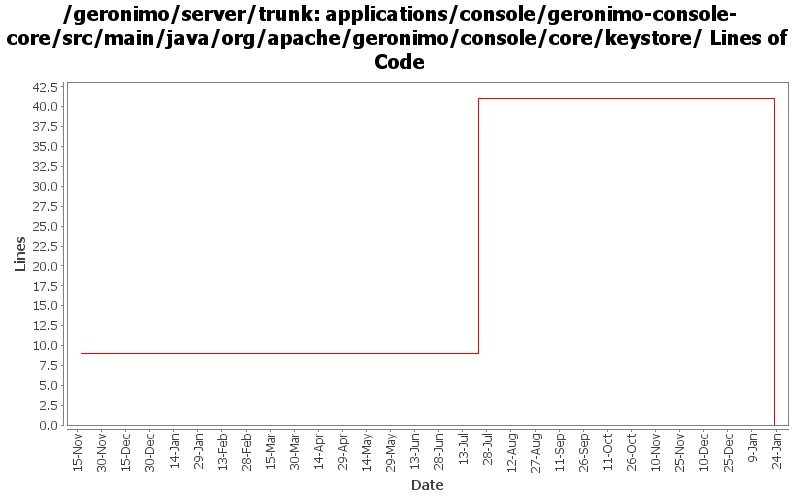

[root]/applications/console/geronimo-console-core/src/main/java/org/apache/geronimo/console/core/keystore

| Author | Changes | Lines of Code | Lines per Change |
|---|---|---|---|
| Totals | 7 (100.0%) | 41 (100.0%) | 5.8 |
| dwoods | 1 (14.3%) | 41 (100.0%) | 41.0 |
| kevan | 4 (57.1%) | 0 (0.0%) | 0.0 |
| jdillon | 2 (28.6%) | 0 (0.0%) | 0.0 |
(GERONIMO-3747) Moved applications/* to plugins/*
0 lines of code changed in 2 files:
Reintegrate some improvements from G2586 and G2588 that seemed to have been lost.
41 lines of code changed in 1 file:
GERONIMO-2537 Update more src file headers to be compliant with new apache policy. Also made some updates for consistency
0 lines of code changed in 4 files: